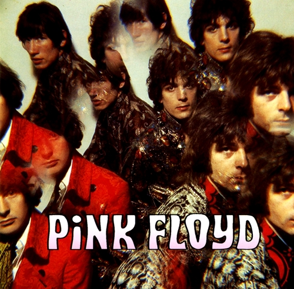

The Piper at Gates of Dawn

The Piper at the Gates of Dawn é o álbum de estreia da banda britânica de rock Pink Floyd, lançado em agosto de 1967. Foi o único álbum da banda que foi feito sob a liderança de Syd Barrett. O álbum tem letras caprichosas sobre espantalhos, gnomos, bicicletas e contos de fadas, juntamente com passagens instrumentais de rock psicodélico. É considerado um dos pioneiros do art rock. O álbum foi gravado nos Abbey Road Studios, e foi distribuído em 1967, chegando a ser o 6º mais vendido no Reino Unido e o 131º mais vendido nos Estados Unidos. The Piper at the Gates of Dawn foi produzido no estúdio Abbey Road, simultaneamente às gravações de outro grande sucesso da indústria fonográfica britânica: o oitavo dos Beatles, Sgt. Pepper’s Lonely Hearts Club Band. O convívio durante esse período acabou proporcionando grande troca de influências musicais entre as duas bandas. Ambos os discos refletem a onda de experimentação que marcou os processos de composição e gravação da época. O álbum é o único registro da liderança do vocalista e compositor Syd Barrett, autor da maior parte das faixas do disco. O consumo excessivo de drogas e o mau comportamento fizeram com que os outros integrantes da banda convidassem o cantor e guitarrista David Gilmour para substituir Barrett. O título do álbum é baseado no conto infantil O vento nos salgueiros, de Kenneth Grahame, onde o Rato e a Toupeira, enquanto procuram um animal perdido, têm uma experiência religiosa. ("Este é o local do meu sonho, onde eu ouvi a música," segredou o Rato, como se estivesse em transe. "Aqui é o meu local sagrado, se o pudermos encontrar nalgum lado, é aqui"). O flautista (em inglês: piper) é identificado com o deus grego Pan.